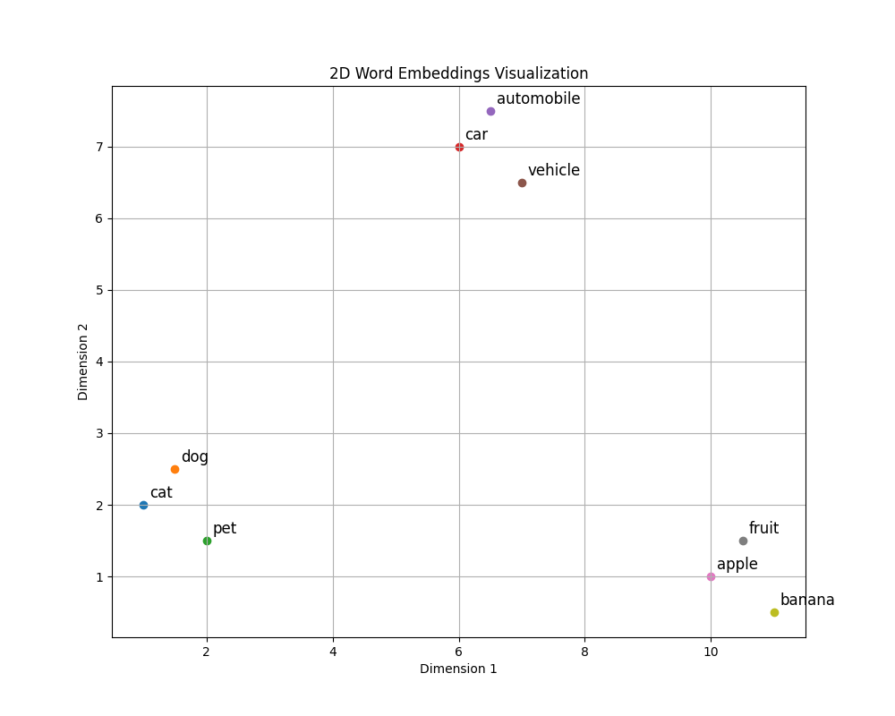

Deep Dive Into GPT-2#
In this chapter we will deconstruct one of the most known LLMs ever created - GPT-2. The reason we chose this model is that most of the models that followed it reused much of its architecture. If you understand GPT-2, you will not have too much trouble understanding later models. Additionally, GPT-2 is not too large (“just” 1.5 billion parameters), so you will be able to load it in the memory of your local machine and won’t have to provision a GPU instance.
As usual, we need to import a few things:
import torch
from transformers import AutoTokenizer, AutoModel
/opt/hostedtoolcache/Python/3.9.19/x64/lib/python3.9/site-packages/tqdm/auto.py:21: TqdmWarning: IProgress not found. Please update jupyter and ipywidgets. See https://ipywidgets.readthedocs.io/en/stable/user_install.html
from .autonotebook import tqdm as notebook_tqdm
We will also disable the progress bars as to not pollute the book (you should probably keep them though when following along):
import os
os.environ["HF_HUB_DISABLE_PROGRESS_BARS"] = "1"
Loading the Model and Performing Inference#
First, we will load the tokenizer and the model:
tokenizer = AutoTokenizer.from_pretrained("gpt2")
model = AutoModel.from_pretrained("gpt2")
Downloading: 0%| | 0.00/523M [00:00<?, ?B/s]
Downloading: 1%| | 6.25M/523M [00:00<00:08, 65.5MB/s]
Downloading: 2%|▏ | 12.6M/523M [00:00<00:08, 66.4MB/s]
Downloading: 4%|▎ | 19.1M/523M [00:00<00:07, 67.2MB/s]
Downloading: 5%|▍ | 25.6M/523M [00:00<00:07, 67.3MB/s]
Downloading: 6%|▌ | 32.1M/523M [00:00<00:07, 67.6MB/s]
Downloading: 7%|▋ | 38.5M/523M [00:00<00:07, 67.6MB/s]
Downloading: 9%|▊ | 45.0M/523M [00:00<00:07, 67.3MB/s]
Downloading: 10%|▉ | 51.4M/523M [00:00<00:07, 66.8MB/s]
Downloading: 11%|█ | 57.8M/523M [00:00<00:07, 66.5MB/s]
Downloading: 12%|█▏ | 64.1M/523M [00:01<00:07, 65.9MB/s]
Downloading: 13%|█▎ | 70.4M/523M [00:01<00:07, 65.9MB/s]
Downloading: 15%|█▍ | 76.7M/523M [00:01<00:07, 65.4MB/s]
Downloading: 16%|█▌ | 82.9M/523M [00:01<00:07, 65.4MB/s]
Downloading: 17%|█▋ | 89.2M/523M [00:01<00:06, 65.1MB/s]
Downloading: 18%|█▊ | 95.4M/523M [00:01<00:06, 65.1MB/s]
Downloading: 19%|█▉ | 102M/523M [00:01<00:06, 65.0MB/s]
Downloading: 21%|██ | 108M/523M [00:01<00:07, 59.6MB/s]
Downloading: 22%|██▏ | 114M/523M [00:01<00:07, 61.0MB/s]
Downloading: 23%|██▎ | 120M/523M [00:01<00:06, 60.6MB/s]
Downloading: 24%|██▍ | 126M/523M [00:02<00:06, 62.1MB/s]
Downloading: 25%|██▌ | 132M/523M [00:02<00:06, 63.1MB/s]
Downloading: 27%|██▋ | 139M/523M [00:02<00:06, 64.4MB/s]
Downloading: 28%|██▊ | 145M/523M [00:02<00:06, 64.8MB/s]
Downloading: 29%|██▉ | 152M/523M [00:02<00:05, 67.8MB/s]
Downloading: 30%|███ | 159M/523M [00:02<00:05, 67.4MB/s]
Downloading: 32%|███▏ | 165M/523M [00:02<00:05, 67.3MB/s]
Downloading: 33%|███▎ | 172M/523M [00:02<00:05, 68.3MB/s]
Downloading: 34%|███▍ | 178M/523M [00:02<00:05, 68.1MB/s]
Downloading: 35%|███▌ | 185M/523M [00:02<00:05, 68.0MB/s]
Downloading: 37%|███▋ | 191M/523M [00:03<00:05, 67.3MB/s]
Downloading: 38%|███▊ | 198M/523M [00:03<00:05, 67.4MB/s]
Downloading: 39%|███▉ | 204M/523M [00:03<00:05, 66.3MB/s]
Downloading: 40%|████ | 211M/523M [00:03<00:04, 66.6MB/s]
Downloading: 42%|████▏ | 217M/523M [00:03<00:04, 66.4MB/s]
Downloading: 43%|████▎ | 223M/523M [00:03<00:04, 66.2MB/s]
Downloading: 44%|████▍ | 230M/523M [00:03<00:04, 66.6MB/s]
Downloading: 45%|████▌ | 236M/523M [00:03<00:04, 66.7MB/s]
Downloading: 46%|████▋ | 243M/523M [00:03<00:04, 66.3MB/s]
Downloading: 48%|████▊ | 249M/523M [00:03<00:04, 66.2MB/s]
Downloading: 49%|████▉ | 255M/523M [00:04<00:04, 66.0MB/s]
Downloading: 50%|█████ | 262M/523M [00:04<00:04, 66.0MB/s]
Downloading: 51%|█████ | 268M/523M [00:04<00:04, 65.4MB/s]
Downloading: 52%|█████▏ | 274M/523M [00:04<00:03, 66.0MB/s]
Downloading: 54%|█████▎ | 281M/523M [00:04<00:03, 66.4MB/s]
Downloading: 55%|█████▌ | 288M/523M [00:04<00:03, 69.8MB/s]
Downloading: 57%|█████▋ | 295M/523M [00:04<00:03, 72.0MB/s]
Downloading: 58%|█████▊ | 303M/523M [00:04<00:03, 73.0MB/s]
Downloading: 59%|█████▉ | 310M/523M [00:04<00:03, 73.8MB/s]
Downloading: 61%|██████ | 317M/523M [00:04<00:02, 74.3MB/s]
Downloading: 62%|██████▏ | 324M/523M [00:05<00:02, 74.6MB/s]
Downloading: 63%|██████▎ | 331M/523M [00:05<00:02, 74.5MB/s]
Downloading: 65%|██████▍ | 338M/523M [00:05<00:02, 74.4MB/s]
Downloading: 66%|██████▌ | 346M/523M [00:05<00:02, 74.4MB/s]
Downloading: 67%|██████▋ | 353M/523M [00:05<00:02, 74.7MB/s]
Downloading: 69%|██████▉ | 360M/523M [00:05<00:02, 74.9MB/s]
Downloading: 70%|███████ | 367M/523M [00:05<00:02, 74.9MB/s]
Downloading: 72%|███████▏ | 374M/523M [00:05<00:02, 75.0MB/s]
Downloading: 73%|███████▎ | 381M/523M [00:05<00:01, 75.1MB/s]
Downloading: 74%|███████▍ | 389M/523M [00:05<00:01, 75.1MB/s]
Downloading: 76%|███████▌ | 396M/523M [00:06<00:01, 75.1MB/s]
Downloading: 77%|███████▋ | 403M/523M [00:06<00:01, 75.4MB/s]
Downloading: 78%|███████▊ | 410M/523M [00:06<00:01, 74.4MB/s]
Downloading: 80%|███████▉ | 417M/523M [00:06<00:01, 73.8MB/s]
Downloading: 81%|████████ | 425M/523M [00:06<00:01, 74.2MB/s]
Downloading: 83%|████████▎ | 432M/523M [00:06<00:01, 71.6MB/s]
Downloading: 84%|████████▍ | 438M/523M [00:06<00:01, 70.2MB/s]
Downloading: 85%|████████▌ | 445M/523M [00:06<00:01, 69.5MB/s]
Downloading: 86%|████████▋ | 452M/523M [00:06<00:01, 68.8MB/s]
Downloading: 88%|████████▊ | 458M/523M [00:07<00:00, 67.5MB/s]
Downloading: 89%|████████▉ | 465M/523M [00:07<00:00, 62.9MB/s]
Downloading: 90%|█████████ | 471M/523M [00:07<00:00, 61.7MB/s]
Downloading: 91%|█████████▏| 477M/523M [00:07<00:00, 63.3MB/s]
Downloading: 93%|█████████▎| 484M/523M [00:07<00:00, 65.5MB/s]
Downloading: 94%|█████████▍| 491M/523M [00:07<00:00, 66.5MB/s]
Downloading: 95%|█████████▌| 497M/523M [00:07<00:00, 67.3MB/s]
Downloading: 96%|█████████▋| 504M/523M [00:07<00:00, 67.8MB/s]
Downloading: 98%|█████████▊| 511M/523M [00:07<00:00, 70.2MB/s]
Downloading: 99%|█████████▉| 518M/523M [00:07<00:00, 71.8MB/s]
Downloading: 100%|██████████| 523M/523M [00:08<00:00, 68.4MB/s]
print(type(tokenizer))
<class 'transformers.models.gpt2.tokenization_gpt2_fast.GPT2TokenizerFast'>
print(type(model))
<class 'transformers.models.gpt2.modeling_gpt2.GPT2Model'>
Next perform inference using an example text:
text = "This is an example sentence"
encoded_input = tokenizer(text, return_tensors='pt')
print(encoded_input)
{'input_ids': tensor([[1212, 318, 281, 1672, 6827]]), 'attention_mask': tensor([[1, 1, 1, 1, 1]])}
output = model(**encoded_input)
print(type(output))
<class 'transformers.modeling_outputs.BaseModelOutputWithPastAndCrossAttentions'>
The output contains among other things a last_hidden_state attribute which has the sequence of all the hidden states at the output of the last layer:
output.last_hidden_state.shape
torch.Size([1, 5, 768])
Note that the first dimension is the batch size (which is 1 here since we only have a single text).
The second dimension is the number of tokens.
Finally, the third dimension is the dimension of the hidden state.
output.last_hidden_state
tensor([[[ 0.0530, -0.0137, -0.2393, ..., -0.1245, -0.1116, 0.0225],
[ 0.2470, 0.2260, 0.0397, ..., 0.2413, 0.4349, 0.1768],
[ 0.7483, -0.4052, -0.9382, ..., 0.3646, -0.0287, 0.3722],
[ 0.1990, -0.3695, -1.8210, ..., -0.1772, 0.0093, 0.1647],
[ 0.0704, -0.0537, -2.5189, ..., 0.0582, -0.1217, -0.3843]]],
grad_fn=<ViewBackward0>)
Since we want to predict the next token, we want only the hidden state at the last token:
hidden_state = output.last_hidden_state[0][-1]
The Architecture#
Let’s output the model architecture:
print(model)
GPT2Model(
(wte): Embedding(50257, 768)
(wpe): Embedding(1024, 768)
(drop): Dropout(p=0.1, inplace=False)
(h): ModuleList(
(0): GPT2Block(
(ln_1): LayerNorm((768,), eps=1e-05, elementwise_affine=True)
(attn): GPT2Attention(
(c_attn): Conv1D()
(c_proj): Conv1D()
(attn_dropout): Dropout(p=0.1, inplace=False)
(resid_dropout): Dropout(p=0.1, inplace=False)
)
(ln_2): LayerNorm((768,), eps=1e-05, elementwise_affine=True)
(mlp): GPT2MLP(
(c_fc): Conv1D()
(c_proj): Conv1D()
(act): NewGELUActivation()
(dropout): Dropout(p=0.1, inplace=False)
)
)
(1): GPT2Block(
(ln_1): LayerNorm((768,), eps=1e-05, elementwise_affine=True)
(attn): GPT2Attention(
(c_attn): Conv1D()
(c_proj): Conv1D()
(attn_dropout): Dropout(p=0.1, inplace=False)
(resid_dropout): Dropout(p=0.1, inplace=False)
)
(ln_2): LayerNorm((768,), eps=1e-05, elementwise_affine=True)
(mlp): GPT2MLP(
(c_fc): Conv1D()
(c_proj): Conv1D()
(act): NewGELUActivation()
(dropout): Dropout(p=0.1, inplace=False)
)
)
(2): GPT2Block(
(ln_1): LayerNorm((768,), eps=1e-05, elementwise_affine=True)
(attn): GPT2Attention(
(c_attn): Conv1D()
(c_proj): Conv1D()
(attn_dropout): Dropout(p=0.1, inplace=False)
(resid_dropout): Dropout(p=0.1, inplace=False)
)
(ln_2): LayerNorm((768,), eps=1e-05, elementwise_affine=True)
(mlp): GPT2MLP(
(c_fc): Conv1D()
(c_proj): Conv1D()
(act): NewGELUActivation()
(dropout): Dropout(p=0.1, inplace=False)
)
)
(3): GPT2Block(
(ln_1): LayerNorm((768,), eps=1e-05, elementwise_affine=True)
(attn): GPT2Attention(
(c_attn): Conv1D()
(c_proj): Conv1D()
(attn_dropout): Dropout(p=0.1, inplace=False)
(resid_dropout): Dropout(p=0.1, inplace=False)
)
(ln_2): LayerNorm((768,), eps=1e-05, elementwise_affine=True)
(mlp): GPT2MLP(
(c_fc): Conv1D()
(c_proj): Conv1D()
(act): NewGELUActivation()
(dropout): Dropout(p=0.1, inplace=False)
)
)
(4): GPT2Block(
(ln_1): LayerNorm((768,), eps=1e-05, elementwise_affine=True)
(attn): GPT2Attention(
(c_attn): Conv1D()
(c_proj): Conv1D()
(attn_dropout): Dropout(p=0.1, inplace=False)
(resid_dropout): Dropout(p=0.1, inplace=False)
)
(ln_2): LayerNorm((768,), eps=1e-05, elementwise_affine=True)
(mlp): GPT2MLP(
(c_fc): Conv1D()
(c_proj): Conv1D()
(act): NewGELUActivation()
(dropout): Dropout(p=0.1, inplace=False)
)
)
(5): GPT2Block(
(ln_1): LayerNorm((768,), eps=1e-05, elementwise_affine=True)
(attn): GPT2Attention(
(c_attn): Conv1D()
(c_proj): Conv1D()
(attn_dropout): Dropout(p=0.1, inplace=False)
(resid_dropout): Dropout(p=0.1, inplace=False)
)
(ln_2): LayerNorm((768,), eps=1e-05, elementwise_affine=True)
(mlp): GPT2MLP(
(c_fc): Conv1D()
(c_proj): Conv1D()
(act): NewGELUActivation()
(dropout): Dropout(p=0.1, inplace=False)
)
)
(6): GPT2Block(
(ln_1): LayerNorm((768,), eps=1e-05, elementwise_affine=True)
(attn): GPT2Attention(
(c_attn): Conv1D()
(c_proj): Conv1D()
(attn_dropout): Dropout(p=0.1, inplace=False)
(resid_dropout): Dropout(p=0.1, inplace=False)
)
(ln_2): LayerNorm((768,), eps=1e-05, elementwise_affine=True)
(mlp): GPT2MLP(
(c_fc): Conv1D()
(c_proj): Conv1D()
(act): NewGELUActivation()
(dropout): Dropout(p=0.1, inplace=False)
)
)
(7): GPT2Block(
(ln_1): LayerNorm((768,), eps=1e-05, elementwise_affine=True)
(attn): GPT2Attention(
(c_attn): Conv1D()
(c_proj): Conv1D()
(attn_dropout): Dropout(p=0.1, inplace=False)
(resid_dropout): Dropout(p=0.1, inplace=False)
)
(ln_2): LayerNorm((768,), eps=1e-05, elementwise_affine=True)
(mlp): GPT2MLP(
(c_fc): Conv1D()
(c_proj): Conv1D()
(act): NewGELUActivation()
(dropout): Dropout(p=0.1, inplace=False)
)
)
(8): GPT2Block(
(ln_1): LayerNorm((768,), eps=1e-05, elementwise_affine=True)
(attn): GPT2Attention(
(c_attn): Conv1D()
(c_proj): Conv1D()
(attn_dropout): Dropout(p=0.1, inplace=False)
(resid_dropout): Dropout(p=0.1, inplace=False)
)
(ln_2): LayerNorm((768,), eps=1e-05, elementwise_affine=True)
(mlp): GPT2MLP(
(c_fc): Conv1D()
(c_proj): Conv1D()
(act): NewGELUActivation()
(dropout): Dropout(p=0.1, inplace=False)
)
)
(9): GPT2Block(
(ln_1): LayerNorm((768,), eps=1e-05, elementwise_affine=True)
(attn): GPT2Attention(
(c_attn): Conv1D()
(c_proj): Conv1D()
(attn_dropout): Dropout(p=0.1, inplace=False)
(resid_dropout): Dropout(p=0.1, inplace=False)
)
(ln_2): LayerNorm((768,), eps=1e-05, elementwise_affine=True)
(mlp): GPT2MLP(
(c_fc): Conv1D()
(c_proj): Conv1D()
(act): NewGELUActivation()
(dropout): Dropout(p=0.1, inplace=False)
)
)
(10): GPT2Block(
(ln_1): LayerNorm((768,), eps=1e-05, elementwise_affine=True)
(attn): GPT2Attention(
(c_attn): Conv1D()
(c_proj): Conv1D()
(attn_dropout): Dropout(p=0.1, inplace=False)
(resid_dropout): Dropout(p=0.1, inplace=False)
)
(ln_2): LayerNorm((768,), eps=1e-05, elementwise_affine=True)
(mlp): GPT2MLP(
(c_fc): Conv1D()
(c_proj): Conv1D()
(act): NewGELUActivation()
(dropout): Dropout(p=0.1, inplace=False)
)
)
(11): GPT2Block(
(ln_1): LayerNorm((768,), eps=1e-05, elementwise_affine=True)
(attn): GPT2Attention(
(c_attn): Conv1D()
(c_proj): Conv1D()
(attn_dropout): Dropout(p=0.1, inplace=False)
(resid_dropout): Dropout(p=0.1, inplace=False)
)
(ln_2): LayerNorm((768,), eps=1e-05, elementwise_affine=True)
(mlp): GPT2MLP(
(c_fc): Conv1D()
(c_proj): Conv1D()
(act): NewGELUActivation()
(dropout): Dropout(p=0.1, inplace=False)
)
)
)
(ln_f): LayerNorm((768,), eps=1e-05, elementwise_affine=True)
)
We see that the model has two embedding layers at the beginning - wte and wpe.
The wte layer is the embedding layer for the tokens:
print(model.wte)
Embedding(50257, 768)
The wpe layer is the positional embedding layer:
print(model.wpe)
Embedding(1024, 768)
These layers are followed by a dropout layer:
print(model.drop)
Dropout(p=0.1, inplace=False)
Next, we have the module list h:
print(type(model.h))
<class 'torch.nn.modules.container.ModuleList'>
The module list consists of 12 blocks:
print(len(model.h))
12
Each block is a so called GPT2Block:
print(type(model.h[0]))
<class 'transformers.models.gpt2.modeling_gpt2.GPT2Block'>
Looking inside such a GPT2Block, we will see a lot of very familiar things:
model.h[0]
GPT2Block(
(ln_1): LayerNorm((768,), eps=1e-05, elementwise_affine=True)
(attn): GPT2Attention(
(c_attn): Conv1D()
(c_proj): Conv1D()
(attn_dropout): Dropout(p=0.1, inplace=False)
(resid_dropout): Dropout(p=0.1, inplace=False)
)
(ln_2): LayerNorm((768,), eps=1e-05, elementwise_affine=True)
(mlp): GPT2MLP(
(c_fc): Conv1D()
(c_proj): Conv1D()
(act): NewGELUActivation()
(dropout): Dropout(p=0.1, inplace=False)
)
)
Basically, a GPT2Block has a layer normalization, followed a GPT2Attention block which contains the attention mechanism.
This is in turn followed by another layer normalization, followed by a GPT2MLP block.
Whenever you want to find out, how an LLM model works, it is extremely instructive to print out its architecture to get a basic view of the components it has. Now let’s say how the tensors actually flow through the model.
We start with the embeddings.
Embeddings#
Let’s retrieve the token IDs of our example text:
token_ids = encoded_input["input_ids"]
token_ids
tensor([[1212, 318, 281, 1672, 6827]])
Let’s also get the attention mask for later:
attention_mask = encoded_input["attention_mask"]
print(attention_mask)
tensor([[1, 1, 1, 1, 1]])
Let’s also generate the position IDs.
For every token ID we need a corresponding position ID.
The position ID sequence is constructed by simply starting at 0 and then counting up to len(token_ids) - 1.
position_ids = torch.tensor([[0, 1, 2, 3, 4]], dtype=torch.long)
Let’s calculate the token embeddings:
token_embeds = model.wte(token_ids)
print(token_embeds.shape)
torch.Size([1, 5, 768])
Let’s also calculate the positional embeddings:
position_embeds = model.wpe(position_ids)
print(position_embeds.shape)
torch.Size([1, 5, 768])
To get the final embeddings, we simply add the token embeddings and the positional embeddings.
These final embeddings will also be what we pass to the model as the first layer input.
Since the transformers codebase refers to the layer inputs/outputs as “hidden states”, we will stick to that convention:
hidden_states = token_embeds + position_embeds
print(hidden_states)
tensor([[[ 0.0065, -0.2930, 0.0762, ..., 0.0184, -0.0275, 0.1638],
[ 0.0142, -0.0437, -0.0393, ..., 0.1487, -0.0278, -0.0255],
[-0.0828, -0.0964, 0.1232, ..., 0.0530, 0.0755, -0.1057],
[ 0.0714, -0.2025, 0.1870, ..., -0.3685, -0.0108, -0.1304],
[-0.0888, -0.0326, 0.1666, ..., -0.2539, -0.0370, -0.2046]]],
grad_fn=<AddBackward0>)
Here is a graphic representation of the process:

The First GPT2 Block#
The Attention Part#
The hidden_states tensor is what we will not feed into the first GPT block.
Let’s save the tensor since we will need it later:
residual = hidden_states
Let’s also give the module list a more meaningful name:
layer_blocks = model.h
layer_block = layer_blocks[0]
As a reminder, here is how the layer block looks like:
print(layer_block)
GPT2Block(
(ln_1): LayerNorm((768,), eps=1e-05, elementwise_affine=True)
(attn): GPT2Attention(
(c_attn): Conv1D()
(c_proj): Conv1D()
(attn_dropout): Dropout(p=0.1, inplace=False)
(resid_dropout): Dropout(p=0.1, inplace=False)
)
(ln_2): LayerNorm((768,), eps=1e-05, elementwise_affine=True)
(mlp): GPT2MLP(
(c_fc): Conv1D()
(c_proj): Conv1D()
(act): NewGELUActivation()
(dropout): Dropout(p=0.1, inplace=False)
)
)
First, we pass the hidden states through the attention block. This means, we need to run them through the normalization layer:
hidden_states = layer_block.ln_1(hidden_states)
print(hidden_states.shape)
torch.Size([1, 5, 768])
Next, we want to get the query, key and value tensors:
query_key_value = layer_block.attn.c_attn(hidden_states)
print(query_key_value.shape)
torch.Size([1, 5, 2304])
The queries, keys and values are combined into a single tensor.
This is why the third dimension is 2304 = 768 * 3.
Since we want to work with these tensor separately, we need to split them out using the split function.
We have three dimensions and the queries, keys and values are split across the dimension number 2 (number 0 is the batch size, number 1 is the number tokens), so we need to split across dim=2.
The order of the items in the tensor is query first, key second and value third:
query, key, value = query_key_value.split(768, dim=2)
print(query.shape, key.shape, value.shape)
torch.Size([1, 5, 768]) torch.Size([1, 5, 768]) torch.Size([1, 5, 768])
Next, we need to split the attention heads.
The GPT-2 model has 12 attention heads and a head dimension of 64:
num_heads = 12
head_dim = 64
query = layer_block.attn._split_heads(query, num_heads, head_dim)
key = layer_block.attn._split_heads(key, num_heads, head_dim)
value = layer_block.attn._split_heads(value, num_heads, head_dim)
print(query.shape, key.shape, value.shape)
torch.Size([1, 12, 5, 64]) torch.Size([1, 12, 5, 64]) torch.Size([1, 12, 5, 64])
Next, we compute the attention scores:
attn_output, attn_weights = layer_block.attn._attn(query, key, value, attention_mask)
print(attn_output.shape, attn_weights.shape)
torch.Size([1, 12, 5, 64]) torch.Size([1, 12, 5, 5])
Now its time to merge the attention heads back together:
attn_output = layer_block.attn._merge_heads(attn_output, num_heads, head_dim)
attn_output.shape
torch.Size([1, 5, 768])
Now, we pass the the tensor through a final linear layer:
attn_output = layer_block.attn.c_proj(attn_output)
attn_output.shape
torch.Size([1, 5, 768])
Finally, we add our saved hidden state to the output:
hidden_states = attn_output + residual
hidden_states.shape
torch.Size([1, 5, 768])
Here is again a visualization of the process:

The MLP Part#
The second part of the GPT block is the MLP part.
Again, we first save the current hidden state tensor:
residual = hidden_states
And - again - we first pass the hidden states through a layer normalization block:
hidden_states = layer_block.ln_2(hidden_states)
print(hidden_states.shape)
torch.Size([1, 5, 768])
Next, we pass the hidden states through the linear layer:
feed_forward_hidden_states = layer_block.mlp(hidden_states)
print(feed_forward_hidden_states.shape)
torch.Size([1, 5, 768])
Finally, we add the residual:
hidden_states = residual + feed_forward_hidden_states
print(hidden_states.shape)
torch.Size([1, 5, 768])
hidden_states
tensor([[[ 1.1035, -0.2464, 0.3231, ..., -1.1987, -0.6627, 1.9803],
[-1.3085, -0.2814, -0.8437, ..., 0.2028, 0.1010, 0.7039],
[-0.9680, -0.7867, 0.1910, ..., -0.4938, -0.0832, -1.1468],
[-2.1911, -0.1754, -1.5701, ..., -2.0236, 0.8131, 1.1406],
[-3.2628, 2.9190, -0.5089, ..., 0.0336, -0.0497, -0.7092]]],
grad_fn=<AddBackward0>)
The Other GPT Blocks#
Now, we simply pass the hidden states through one block after the other, where the output of each block is the input to the next block:
for block in model.h[1:]:
hidden_states = block(hidden_states)[0]
print(hidden_states.shape)
torch.Size([1, 5, 768])
Finally, we pass the final result through one last layer normalization:
hidden_states = model.ln_f(hidden_states)
print(hidden_states.shape)
torch.Size([1, 5, 768])
Let’s verify that our calculations are correct by checking if the hidden_states tensor we computed manually is the same as output.last_hidden_state:
torch.allclose(hidden_states, output.last_hidden_state, rtol=1e-04, atol=1e-06)
True